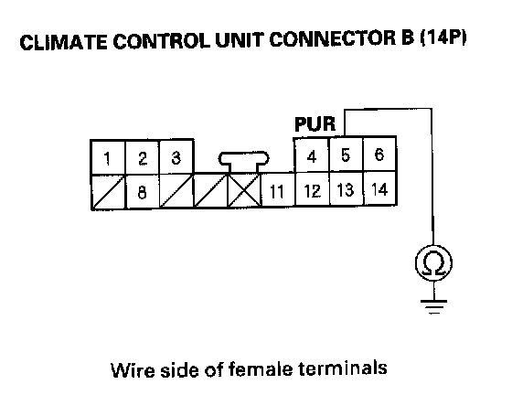
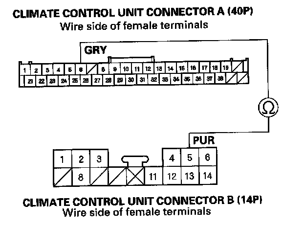
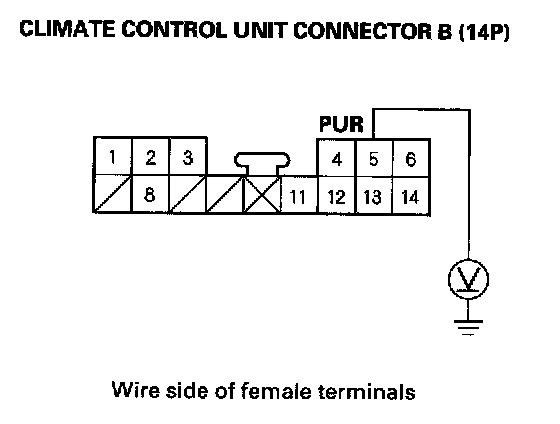
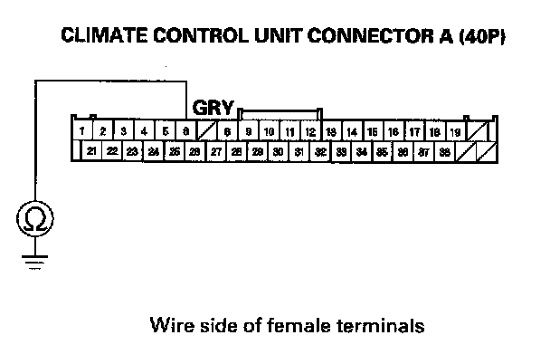
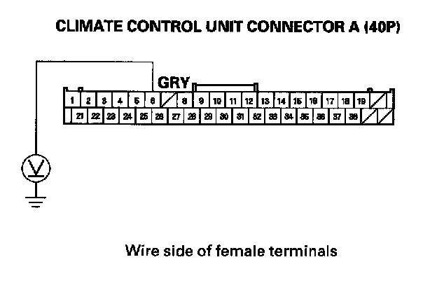
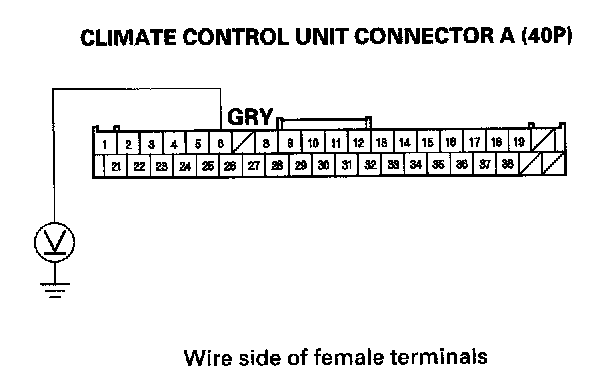
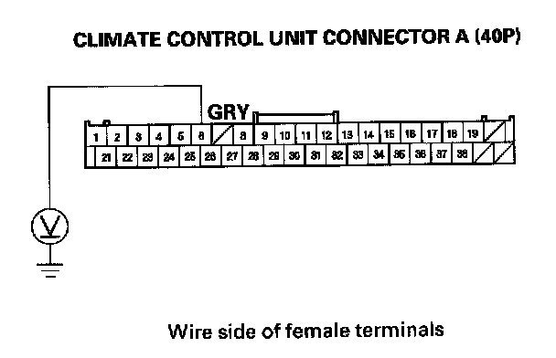

B1245
DTC B1245 or DTC indicator G: A Short in the Rear Air Mix Control Motor Circuit1. Clear the DTC with the HDS.
2. Turn the ignition switch OFF and then ON (II).
3. Do the self-diagnostic with the HDS or climate control unit.
4. Check for DTCs.
Is DTC B1245 or G indicated?
YES - Go to step 5.
NO - Intermittent failure.
5. Check for DTCs.
Are these DTCs also present; B1234 or K and AUTO, and/or B1237 or N and AUTO, and/or B2968 or A and WINDSHIELD DEFROST, and/or B2980 or B and WINDSHIELD DEFROST?
YES - Go to step 13.
NO - Go to step 6.
6. Turn the ignition switch OFF.
7. Test the rear air mix control motor.
Is the rear air mix control motor OK?
YES - Go to step 8.
NO - Replace the rear air mix control motor.
8. Disconnect the rear air mix control motor 7P connector.
9. Disconnect climate control unit connector A (40P) and B(14P).

10. Check for continuity between climate control unit connector B (14P) terminal No. 5 and body ground.
Is there continuity?
YES - Repair short to body ground in the wire between the climate control unit and the rear air mix control motor.
NO - Go to step 11.

11. Check for continuity between climate control unit connector A (40P) terminal No. 6 and climate control unit connector B (14P) terminal No. 5.
Is there continuity?
YES - Repair the short in the wires.
NO - Go to step 12.

12. Turn the ignition switch ON (II), and measure the voltage between climate control unit connector B (14P) terminal No. 5 and body ground.
Is there any voltage?
YES - Repair short to power in the wire between the climate control unit and the rear air mix control motor. This short may also damage the climate control unit. Repair the short to power before replacing the climate control unit.
NO - Substitute a known-good climate control unit, and recheck. If the symptom/indication goes away, replace the original climate control unit.
13. Turn the ignition switch OFF, and disconnect the climate control unit.
14. Disconnect these items:
- Driver's air mix control motor
- Passenger's air mix control motor
- Rear air mix control motor
- Humidity/in-car temperature sensor
- A/C pressure sensor

15. Check for continuity between climate control unit connector A (40P) terminal No. 6 and body ground.
Is there continuity?
YES - Repair short to body ground in the wire.
NO - Go to step 16.

16. Turn the ignition switch ON (II), and check the same terminal for voltage to body ground.
Is there any voltage?
YES - Repair short to power in the wire. This short may have also damaged the climate control unit. Repair the short to power before replacing the climate control unit.
NO - Go to step 17.
17. Turn the ignition switch OFF.
18. Reconnect climate control unit connector (40P).

19. Turn the ignition switch ON (II), and measure the voltage between climate control unit connector A (40P) terminal No. 6 and body ground.
Is there about 5 volts?
YES - Go to step 20.
NO - Check for a loose wire or poor connection at climate control unit connector A (40P). If the connection is good, substitute a known-good climate control unit and recheck. If the symptom/ indication goes away, replace the original climate control unit.

20. While checking the same terminal for voltage to ground, reconnect these items individually and note the voltage reading each time:
- Driver's air mix control motor
- Passenger's air mix control motor
- Rear air mix control motor
- Humidity/in-car temperature sensor
- A/C pressure sensor
Does the voltage remain at about 5 volts?
YES - Substitute a known-good climate control unit and recheck. If the symptom/indication goes away, replace the original climate control unit.
NO - Replace the component that caused the voltage drop.